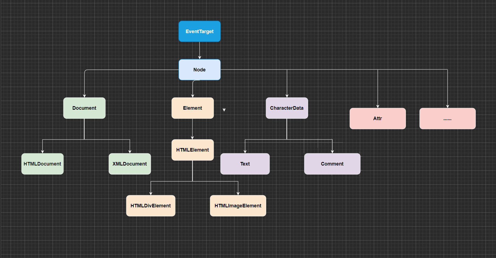

# 认识 DOM 和架构
浏览器是用来展示网页的，而网页中最重要的就是里面各种的标签元素，JavaScript 很多时候是需要操作这些元素的。
JavaScript 如何操作元素呢？通过 Document Object Model（DOM，文档对象模型）。
DOM 给我们提供了一系列的模型和对象，让我们可以方便的来操作 Web 页面。

# EventTarget
因为继承自 EventTarget，所以也可以使用 EventTarget 的方法：
document. addEventListener ( "click" , ( ) => console. log ( "document被点击" ) ) const divEl = document. querySelector ( "div" ) const spanEl = document. querySelector ( "span" ) divEl. addEventListener ( "click" , ( ) => console. log ( "div元素被点击" ) ) spanEl. addEventListener ( "click" , ( ) => console. log ( "span元素被点击" ) )
# Node 节点
所有的 DOM 节点类型都继承自 Node 接口。
https://developer.mozilla.org/zh-CN/docs/Web/API/Node
Node 有几个非常重要的属性：
nodeName：node 节点的名称。
nodeType：可以区分节点的类型。
nodeValue：node 节点的值；
childNodes：所有的子节点；
console. log ( divEl. nodeName, spanEl. nodeName ) console. log ( divEl. nodeType, spanEl. nodeType)
注意 document 虽然是继承 Node , 是有 appendChild 方法的，但浏览器进行了限制，不能进行添加
const span = document. createElement ( 'span' ) document. appendChild ( span)
会报下面这种错误 Uncaught DOMException: Failed to execute 'appendChild' on 'Node': Only one element on document allowed.
但从打印可以看出是有这个方法的
console. log ( document. appendChild)
const span = document. createElement ( 'span' ) document. body. appendChild ( span)
# Document 常见的属性
document.body
document.head
document.title
console. log ( document. body) console. log ( document. head) document. title = "Hello World"
window.locationwindow.location 和 document.location 他们是指向同一个对象
console. log ( window. location) console. log ( document. location) console. log ( window. location === document. location)
# Document 常见的方法# createElement
语法： const element = document.createElement(tagName[, options])
const image = document. createElement ( "img" ) console. log ( image)
# getElementById
** element ** 是一个 Element 对象。如果当前文档中拥有特定 ID 的元素不存在则返回 null.
** id ** 是大小写敏感的字符串，代表了所要查找的元素的唯一 ID.
const element = document. getElementById ( id)
如果 id为box则返回该元素对象 ，否则为 null
const divEl1 = document. getElementById ( "box" ) console. log ( divEl1) const divEl1 = document. getElementById ( "abc" ) console. log ( divEl1)
# getElementsByTagName
elements 是一个由发现的元素出现在树中的顺序构成的动态的 HTML 集合 HTMLCollection (但是看下面的提示) 。name 是一个代表元素的名称的字符串。特殊字符 "*" 代表了所有元素。
const elements = document. getElementsByTagName ( name) ;
const divEl2 = document. getElementsByTagName ( "div" ) console. log ( divEl2) console. log ( divEl2[ 0 ] ) console. log ( divEl2[ 1 ] )
# getElementsByNameelements = document. getElementsByName ( name)
< divname = " title" > </ div> < h2name = " title" > </ h2>
const divEl3 = document. getElementsByName ( "title" ) console. log ( divEl3) console. log ( divEl3[ 0 ] ) console. log ( divEl3[ 1 ] )
# querySelectorelement = document. querySelector ( selectors)
selectors 包含一个或多个要匹配的选择器的 DOM 字符串 DOMString 。 该字符串必须是有效的 CSS 选择器字符串；如果不是，则引发 SYNTAX_ERR 异常。请参阅使用选择器定位 DOM 元素 以获取有关选择器以及如何管理它们的更多信息。比如有三个元素
< h2id = " content" > </ h2> < divclass = " content" > </ div> < spanname = " content" > </ span>
const divEl4 = document. querySelector ( "#content" ) const divEl5 = document. querySelector ( ".content" ) const divEl6 = document. querySelector ( "[name=content]" ) console. log ( divEl4) console. log ( divEl5) console. log ( divEl6)
# querySelectorAll
返回与指定的选择器组匹配的文档中的元素列表 (使用深度优先的先序遍历文档的节点)。返回的对象是 NodeList
selectors 一个 DOMString 包含一个或多个匹配的选择器。这个字符串必须是一个合法的 CSS selector 如果不是，会抛出一个 SyntaxError 错误。有关使用选择器标识元素的更多信息，请参阅 Locating DOM elements using selectors 可以通过使用逗号分隔多个选择器来指定它们。
elementList = parentNode. querySelectorAll ( selectors)
< div class = "content" > < / div> < div class = "content" > < / div> < div class = "content" > < / div>
匹配到返回一个数组，如下面这样然后可以通过下标获取元素，没找到返回 undefined
const divEl7 = document. querySelectorAll ( ".content" ) console. log ( divEl7) console. log ( divEl7[ 0 ] ) console. log ( divEl7[ 1 ] ) console. log ( divEl7[ 2 ] ) console. log ( divEl7[ 3 ] )
# Element 常见的属性
需要了解下面属性的更多详情可以去 MDN 查看，链接我都放在后面啦～
id https://developer.mozilla.org/zh-CN/docs/Web/API/Element/id
tagName https://developer.mozilla.org/zh-CN/docs/Web/API/Element/tagName
children https://developer.mozilla.org/zh-CN/docs/Web/API/Element/children
className https://developer.mozilla.org/zh-CN/docs/Web/API/Element/className
classList https://developer.mozilla.org/zh-CN/docs/Web/API/Element/classList
clientWidth https://developer.mozilla.org/zh-CN/docs/Web/API/Element/clientWidth
clientHeight https://developer.mozilla.org/zh-CN/docs/Web/API/Element/clientHeight
offsetLeft https://developer.mozilla.org/zh-CN/docs/Web/API/HTMLElement/offsetLeft
offsetTop https://developer.mozilla.org/zh-CN/docs/Web/API/HTMLElement/offsetTop
然后通过下面案例简单测试下
< style> * { margin : 0; padding : 0; } #box { width : 200px; height : 200px; background-color : red; } .content { width : 100px; height : 100px; display : inline-block; background-color : blue; } </ style> < divid = " box" class = " abc def" age = " 18" > < spanname = " nekoaimer" class = " content" > </ span> < strong> </ strong> < ahref = " #" > </ a> </ div>
const divEl = document. querySelector ( "#box" ) console. log ( divEl. id) console. log ( divEl. tagName) console. log ( divEl. children) console. log ( divEl. className) console. log ( divEl. classList) console. log ( divEl. clientWidth) console. log ( divEl. clientHeight) console. log ( divEl. offsetLeft) console. log ( divEl. offsetTop)
# Element 常见的方法
因为继承自 Node ，那么很多方法都是有的，比如 appendChild、removeChild ......
下面说两个特有的方法，以下面案例举栗
< div id= "box" class = "abc def" age= "16" > < / div>
getAttribute 获取属性值 https://developer.mozilla.org/zh-CN/docs/Web/API/Element/getAttribute setAttribute 设置属性与值 https://developer.mozilla.org/zh-CN/docs/Web/API/Element/setAttribute
const divEl = document. querySelector ( "#box" ) const value = divEl. getAttribute ( "age" ) console. log ( value) divEl. setAttribute ( 'friend' , 'saber' ) console. log ( divEl)
# 认识事件监听
前面我们讲到了 JavaScript 脚本和浏览器之间交互时，浏览器给我们提供的 BOM、DOM 等一些对象模型。
事实上还有一种需要和浏览器经常交互的事情就是事件监听：
浏览器在某个时刻可能会发生一些事件，比如鼠标点击、移动、滚动、获取、失去焦点、输入内容等等一系列的事件；
我们需要以某种方式（代码）来对其进行响应，进行一些事件的处理；
在 Web 当中，事件在浏览器窗口中被触发，并且通过绑定到某些元素上或者浏览器窗口本身，那么我们就可以给这些元素或者 window 窗口来绑定事件的处理程序，来对事件进行监听。
如何进行事件监听呢？
事件监听方式一：在 script 中直接监听；
事件监听方式二：通过元素的 on 来监听事件；
事件监听方式三：通过 EventTarget 中的 addEventListener 来监听；
举几个栗子，先来个样式方便点击
< style> .box { width : 100px; height : 100px; background-color : pink; } </ style>
# 在 script 中直接监听< divclass = " box" onclick = " console. log ( 'div元素被点击' ) " > </ div>
< divclass = " box" onclick = " divClick ( ) " > </ div>
function divClick ( ) { console. log ( "div元素被点击2" ) }
# 通过元素的 on 来监听事件
通过 onClick 来监听，但缺点是只能监听一个，也就是说最后一个事件会覆盖上面两个事件
const divEl = document. querySelector ( ".box" ) divEl. onclick = function ( ) { console. log ( "div元素被点击1" ) } divEl. onclick = function ( ) { console. log ( "div元素被点击2" ) } divEl. onclick = function ( ) { console. log ( "div元素被点击3" ) }
# 通过 EventTarget 中的 addEventListener 来监听const divEl = document. querySelector ( ".box" ) divEl. addEventListener ( "click" , ( ) => console. log ( "div元素被点击1" ) ) divEl. addEventListener ( "click" , ( ) => console. log ( "div元素被点击2" ) ) divEl. addEventListener ( "click" , ( ) => console. log ( "div元素被点击3" ) )
# 认识事件流的由来
事实上对于事件有一个概念叫做事件流，为什么会产生事件流呢？
我们可以想到一个问题：当我们在浏览器上对着一个元素点击时，你点击的不仅仅是这个元素本身
这是因为我们的 HTML 元素是存在父子元素叠加层级的
比如一个 span 元素是放在 div 元素上的，div 元素是放在 body 元素上的，body 元素是放在 html 元素上的
# 事件冒泡和事件捕获< style> body { color: white; background-color: yellow; } .container { width: 200px; height: 200px; background-color: pink; } .span { width: 100px; height: 100px; display: inline-block; background-color: rgb(228, 79, 10); }
# 事件冒泡const spanEl = document. querySelector ( ".span" ) const divEl = document. querySelector ( ".container" ) spanEl. addEventListener ( "click" , ( ) => console. log ( "事件冒泡: span元素被点击了" ) ) divEl. addEventListener ( "click" , ( ) => console. log ( "事件冒泡: div元素被点击了" ) ) document. body. addEventListener ( "click" , ( ) => console. log ( "事件冒泡: body元素被点击了" ) )
当点击了 span 元素时打印顺序 span -> div -> body
当点击了 div 元素时打印顺序 div -> body
# 事件捕获
当 addEventListener 里传入第三个参数为 true ，就是事件捕获由外往里传的
const spanEl = document. querySelector ( ".span" ) const divEl = document. querySelector ( ".container" ) spanEl. addEventListener ( "click" , ( event ) => console. log ( "事件捕获: span元素被点击了" ) , true ) divEl. addEventListener ( "click" , ( ) => console. log ( "事件捕获: div元素被点击了" ) , true ) document. body. addEventListener ( "click" , ( event ) => console. log ( "事件捕获: body元素被点击了" ) , true )
当点击了 span 元素时打印顺序 body -> div -> span
当点击了 div 元素时打印顺序 body -> div
# 事件对象 event
当一个事件发生时，就会有和这个事件相关的很多信息：
比如事件的类型是什么，你点击的是哪一个元素，点击的位置是哪里等等相关的信息；
那么这些信息会被封装到一个 Event 对象中；
该对象给我们提供了想要的一些属性，以及可以通过该对象进行某些操作；
常见的属性：
type：事件的类型；
target：当前事件发生的元素；
currentTarget：当前处理事件的元素；
offsetX、offsetY：点击元素的位置；
常见的方法：
preventDefault：取消事件的默认行为；
stopPropagation：阻止事件的进一步传递；
更多事件类型详情 MDN：https://developer.mozilla.org/zh-CN/docs/Web/Events
# 常见的属性< style> body { color : white; background-color : yellow; } .container { width : 200px; height : 200px; background-color : pink; } .span { width : 100px; height : 100px; display : inline-block; background-color : #e44f0a; } </ style> < divclass = " container" > div元素 < spanclass = " span" > </ span> </ div>
const spanEl = document. querySelector ( ".span" ) spanEl. addEventListener ( "click" , ( event ) => { console. log ( "span元素被点击:" , event) console. log ( "事件的类型:" , event. type) console. log ( "事件的元素:" , event. target, event. currentTarget) console. log ( "事件发生的位置:" , event. offsetX, event. offsetY) } )
const divEl = document. querySelector ( ".container" ) divEl. addEventListener ( "click" , ( event ) => console. log ( "div元素被点击:" , event. target, event. currentTarget) )
# 常见的方法
preventDefault 阻止默认行为举个栗子
< ahref = " https://nekoaimer.com" > </ a>
点击不会跳转到 https://nekoaimer.com 页面
const aEl = document. querySelector ( "a" ) aEl. addEventListener ( "click" , ( event ) => event. preventDefault ( ) )
stopPropagation 阻止事件冒泡举个栗子
< style> body { color : white; background-color : yellow; } .container { width : 200px; height : 200px; background-color : pink; } .span { width : 100px; height : 100px; display : inline-block; background-color : #e44f0a; } </ style> < divclass = " container" > div元素 < spanclass = " span" > </ span> </ div>
加上 event.stopPropagation() 后
spanEl. addEventListener ( "click" , ( event ) => { event. stopPropagation ( ) console. log ( "事件捕获: span元素被点击了" ) } ) divEl. addEventListener ( "click" , ( ) => console. log ( "事件捕获: div元素被点击了" ) ) document. body. addEventListener ( "click" , ( event ) => console. log ( "事件捕获: body元素被点击了" ) )
点击 span , 回答下只打印了下面一句信息，因为阻止了冒泡
但是点击 div 后依旧与之前一样向外进行冒泡 div -> body